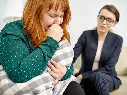

Los trastornos de ansiedad son afecciones en las que la ansiedad no desaparece y puede empeorar con el tiempo. Los síntomas pueden interferir con las actividades diarias, como el desempeño en el trabajo, la escuela y las relaciones entre personas.
TRASTORNO DE ANSIEDAD GENERALIZADA: Las personas con este trastorno se preocupan por problemas comunes como la
salud, el dinero, el trabajo y la familia. Pero sus preocupaciones son excesivas y las tienen casi todos los días
durante al menos 6 meses
TRASTORNO DE PANICO: Las personas con trastorno de pánico sufren de ataques de pánico. Estos son repentinos y
repetidos momentos de miedo intenso sin haber un peligro aparente. Los ataques se producen rápidamente y pueden
durar varios minutos o máS.
FOBIAS: Las personas con fobias tienen un miedo intenso a algo que representa poco o ningún peligro real. Su miedo
puede ser por arañas, volar, ir a lugares concurridos o estar en situaciones sociales (conocida como ansiedad
social)
Los trastornos alimentarios son afecciones graves de salud mental. Implican problemas serios sobre cómo se piensa sobre la comida y la conducta alimenticia. Se puede comer mucho menos o mucho más de lo necesario.
ATRANCONES DE COMIDA: Es decir, comer sin control. Las personas con trastorno por atracón siguen comiendo incluso después de estar llenas. A menudo, comen hasta que se sienten muy incómodos. En general, después tienen sentimientos de culpa, vergüenza y angustia. Darse atracones de comida con demasiada frecuencia puede causar aumento de peso y obesidad. El trastorno por atracón es el trastorno alimentario más común en los Estados Unidos BULIMIA NERVIOSA: Las personas con bulimia nerviosa también tienen períodos de atracones. Pero luego se purgan provocándose vómitos o usando laxantes. También pueden hacer ejercicio en exceso o pueden ayunar. Las persnas con bulimia nerviosa pueden tener poco peso, peso normal o sobrepeso ANOREXIA NERVIOSA: Las personas con anorexia nerviosa evitan los alimentos, restringen severamente los alimentos o comen cantidades muy pequeñas de solo algunos alimentos. Pueden verse a sí mismas con sobrepeso, incluso cuando están peligrosamente delgadas. La anorexia nerviosa es el menos común de los tres trastornos alimenticios, pero a menudo es el más grave. Tiene la tasa de mortalidad más alta de cualquier trastorno mental.
Los trastornos de la personalidad son un grupo de enfermedades mentales. Involucran un patrón a largo plazo de pensamientos y comportamiento que no son saludables y resultan inflexibles. Esta conducta provoca problemas serios con las relaciones y el trabajo. Las personas con trastornos de la personalidad tienen dificultades para lidiar con el estrés y los problemas cotidianos. Suelen tener relaciones tormentosas con otras personas.
El trastorno de estrés postraumático (TEPT) es una afección de salud mental que algunas personas desarrollan tras experimentar o ver algún evento traumático. Este episodio puede poner en peligro la vida, como la guerra, un desastre natural, un accidente automovilístico o una agresión sexual. Pero a veces el evento no es necesariamente peligroso. Por ejemplo, la muerte repentina e inesperada de un ser querido también puede causar TEPT.
Usted puede desarrollar TEPT a cualquier edad. Muchos factores de riesgo juegan un papel en si tendrá TEPT. Estos incluyen: Su género: Las mujeres tienen más probabilidades de desarrollar TEPT, Haber tenido traumas en la infancia, Sentir horror, impotencia o miedo extremo, Pasar por un evento traumático que dura mucho tiempo, Tener poco o ningún apoyo social después del evento, Sufrir estrés adicional después del evento, como la pérdida de un ser querido, dolor y lesiones, o la pérdida del trabajo o del hogar, Tener antecedentes de enfermedades mentales o uso de sustancias.
